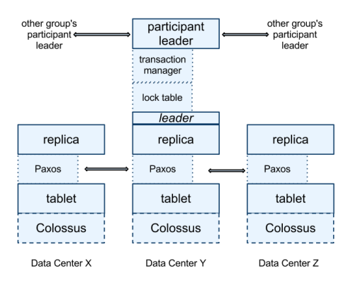

(key: string, timestamp: int64) -> string
We want this to be faster than read-write transactions (xactions)
We read from local replicas and avoid Paxos / cross-datacenter messages
To deal with correctness, we need it to "fit between read/write xactions"
We can't just read the latest committed values if we want to read multiple things in the same transaction
T1: Wx Wy C
T2: Wx Wy C
T3: Rx Ry
Idea is to synchronize all computer's clocks and assign each transaction a timestamp (Snapshot Isolation)
We want the results to occur as if each of them happened in the order of those timestamps